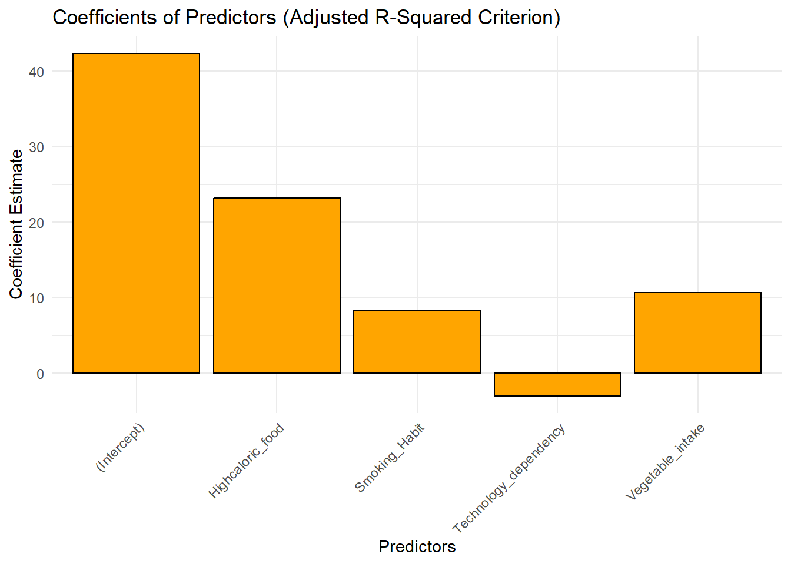
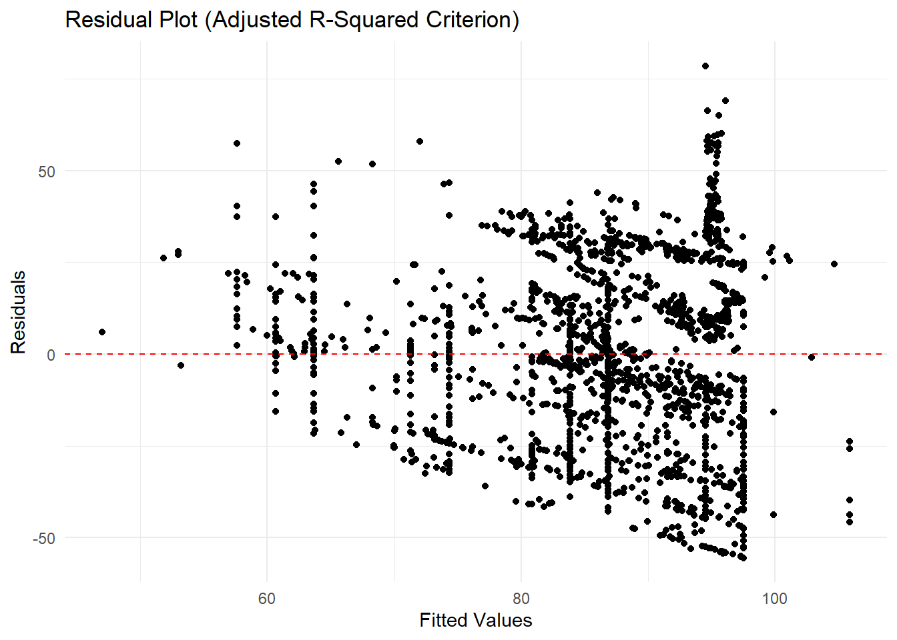
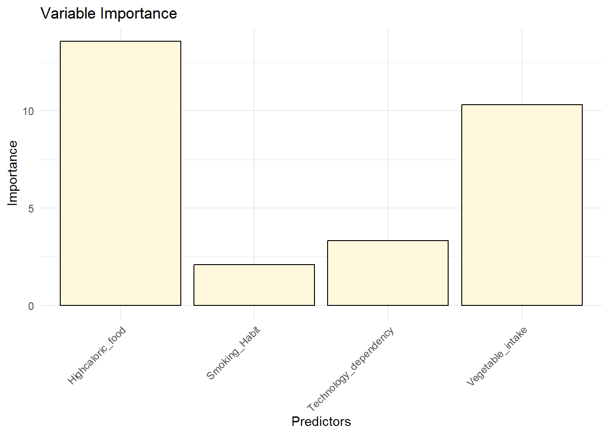

How do factors like high-caloric food intake, smoking habits, vegetable intake and technology dependency correlate with weight?
Methodology:
The above research question can be solved by using multilinear regression and variable selection.Adjusted R-square values is used as a criterion to perform the variable selection.
The statistical analysis of this dataset involves several steps:
Data Loading:
Firstly,we need to load the CSV file.
Show the code
library(ggplot2)
Warning: package 'ggplot2' was built under R version 4.3.3
Show the code
library(car)
Warning: package 'car' was built under R version 4.3.3
Loading required package: carData
Warning: package 'carData' was built under R version 4.3.3
Show the code
library(caret)
Warning: package 'caret' was built under R version 4.3.3
Loading required package: lattice
Show the code
library(MASS)library(dplyr)
Attaching package: 'dplyr'
The following object is masked from 'package:MASS':
select
The following object is masked from 'package:car':
recode
The following objects are masked from 'package:stats':
filter, lag
The following objects are masked from 'package:base':
intersect, setdiff, setequal, union
Show the code
data <-read.csv("C:\\Users\\arava\\OneDrive\\Desktop\\STAT515\\modified_obesity_data.csv")
Data Preprocessing:
This step involves data cleaning where rows with missing values are deleted and categorical variables are converted into dummy numerical variables.
Show the code
data <-na.omit(data)data$Highcaloric_food <-as.numeric(data$Highcaloric_food =="yes")data$Smoking_Habit <-as.numeric(data$Smoking_Habit =="yes")
Model Building:
We build a linear model with Highcaloric_food, Smoking_Habit, Vegetable_intake and Technology_dependency as predictors and Weight as the dependent variable.
After building a model the next step is to perform Stepwise regression which is a variable selection technique by taking Adjusted R-squared values as a criterion to improve the model fitting.
Show the code
final_model <-stepwise_adj_r2(lm_model, data)
Displaying the Outputs and Plots:
After performing stepwise selection the summary of the final model is printed which gives the coefficients, significance levels, and statistics like R-squared values and F-statistics.We also print the coefficient plot, residual plot and variable Importance plot.
Call:
lm(formula = Weight ~ Highcaloric_food + Vegetable_intake + Smoking_Habit +
Technology_dependency, data = data)
Residuals:
Min 1Q Median 3Q Max
-55.505 -17.647 0.165 15.725 78.498
Coefficients:
Estimate Std. Error t value Pr(>|t|)
(Intercept) 42.3267 3.0838 13.726 < 2e-16 ***
Highcaloric_food 23.1905 1.7077 13.580 < 2e-16 ***
Vegetable_intake 10.6626 1.0326 10.326 < 2e-16 ***
Smoking_Habit 8.3548 4.0203 2.078 0.037820 *
Technology_dependency -3.0029 0.9027 -3.327 0.000895 ***
---
Signif. codes: 0 '***' 0.001 '**' 0.01 '*' 0.05 '.' 0.1 ' ' 1
Residual standard error: 24.54 on 2053 degrees of freedom
Multiple R-squared: 0.1283, Adjusted R-squared: 0.1266
F-statistic: 75.55 on 4 and 2053 DF, p-value: < 2.2e-16
Summary of the model:
Residuals:
Residuals are the differences between the observed values of the dependent variable (Weight) and the values predicted by the model.
Min
The model underpredicted this observation by 55.505 units, given the smallest residual as -55.505.
First Quartile
For a quarter of the data, the model’s predictions are around 17.647 units too high, as indicated by 25% of the residuals being smaller than -17.647.
Median
The median residual is very close to 0 (0.165), indicating that the model’s predictions are generally accurate, as half of the residuals are below this value and half are above.
Third Quartile
Most observations have the model’s prediction within about 15.725 units of the actual values, as indicated by the 75% of residuals being smaller than 15.725.
Max
The greatest residual, which is 78.498 units, indicates that the highest underprediction of the model for any given observation is 78.498 units.
Coefficients:
The predictors’ coefficients indicate the expected rise in the dependent variable (weight) for each unit increase in the predictor, assuming no change in the other predictors.
Intercept
The expected weight is about 42.33 units when all predictors are zero.
Highcaloric_food
In comparison to not consuming high-calorie food, there is an average weight rise of 23.19 units linked to high-calorie food consumption
Vegetable_intake
Weight increases by around 10.66 units for every unit increase in vegetable intake.
Smoking_Habit
The average weight rise of smokers is 8.35 units higher than that of non-smokers.
Technology_dependency
Weight drops by 3.00 units for every unit increase in technological dependency.
Statistical Significance(Pr(>|t|)):
It provides the p values to determine whether the model is statistically significant or not.Significance level(alpha) is generally set to 0.05. The null hypothesis states that no effect or no difference between groups whereas the alternative hypothesis stating that there is a difference between groups.If the p< alpha(0.05) the model is considered statistically significant, and the null hypothesis is rejected in favor of the alternative hypothesis.From the summary we can see that p values of all the predictors < 0.05 therefore suggesting that the model is statistically significant.
Residual Standard Error:
This indicates how much the expected values differ from the actual values on an average.The deviation of the model is around 24.54 weight units.
Multiple R-squared (0.1283) and Adjusted R-squared (0.1266):
The model accounts for approximately 12.83% of the variance observed in the dependent variable, weight.When several predictors are present, the adjusted measure becomes more accurate since it accounts for approximately 12.66% of the variation in the model.
F-statistic and its p-value:
This tests whether at least one predictor variable has a non-zero coefficient or not. The less p values states that the model is statistically significant.
In conclusion we can say that the model is statistically significant but with an Adjusted R-squared value of 0.1266 we can say that there is a small variance in the weight.
Show the code
# Coefficient plotcoef_plot_adj_r2 <-ggplot(data =as.data.frame(coef(summary(final_model))), aes(x =rownames(coef(summary(final_model))), y = Estimate)) +geom_bar(stat ="identity", fill ="orange", color ="black") +labs(title ="Coefficients of Predictors (Adjusted R-Squared Criterion)", x ="Predictors", y ="Coefficient Estimate") +theme_minimal() +theme(axis.text.x =element_text(angle =45, hjust =1))print(coef_plot_adj_r2)

The above bar chart displays the coefficient estimates for each predictor in the regression model.
Implications of the Coefficients:
Positive coefficients(Highcaloric_food, Vegetable_intake, Smoking_Habit) shows a direct relationship with weight, where increases in these variables are associated with increases in weight.
Negative coefficient (Technology_dependency) shows an inverse relationship, where increases in this variable are associated with decreases in weight.
Conclusion:
The strength and influence of each predictor on the dependent variable weight, are shown by the relative sizes of the bars. Highcaloric_food shows the most dominant effect, followed by vegetable_intake suggesting that these variables are the most important contributors to the difference in weight shown in your data. The figure clearly illustrates the various effects of dietary and lifestyle choices on weight and offers a visual representation of the regression results that were previously presented.
Show the code
# Residual plotresidual_plot_adj_r2 <-ggplot(data, aes(x =fitted(final_model), y =residuals(final_model))) +geom_point(color ="black") +geom_hline(yintercept =0, linetype ="dashed", color ="red") +labs(title ="Residual Plot (Adjusted R-Squared Criterion)", x ="Fitted Values", y ="Residuals") +theme_minimal()print(residual_plot_adj_r2)

The residual shows the residuals on the vertical axis (the differences between observed and predicted values) plotted against the fitted values(predicted) on the horizontal axis.The dashed red line at zero indicates perfect prediction by the model.The residual plot shows residuals scattered randomly around zero, mostly on the positive side. However, distinct clusters around certain predictions, such as 80 and 100, suggest possible missing nonlinear effects or interactions in the model.Extreme outliers, both above and below the zero line, require investigation for potential data errors.Clear patterns, such as vertical clustering, indicate potential issues like incorrect assumptions about variable relationships or overrepresentation of predictor levels in certain ranges.
In conclusion,the residual plot is a tool for diagnostic checking. It helps in assessing whether the assumptions of linear regression (linearity, independence, constant varience, and normality of residuals) are reasonably satisfied or if further model improvements are needed or not.
Show the code
# Variable importance plotvar_importance_adj_r2 <-ggplot(data =as.data.frame(varImp(final_model)), aes(x =rownames(varImp(final_model)), y = Overall)) +geom_bar(stat ="identity", fill ="cornsilk", color ="black") +labs(title ="Variable Importance", x ="Predictors", y ="Importance") +theme_minimal() +theme(axis.text.x =element_text(angle =45, hjust =1))print(var_importance_adj_r2)

The Variable Importance bar chart visually represents the relative importance of different predictors in the regression model. Highcaloric_food predictor has the highest importance in the model, indicating that it has a potential effect on the dependent variable (weight). This aligns with the earlier regression output where the coefficient for high-caloric food intake was significantly positive, suggesting a strong association with increased weight. Smoking_habit shows the least importance compared to all the predictors. This lesser importance reflects its relatively lower coefficient and it was also marginally significant in the regression analysis (p-value close to the typical significance threshold of 0.05).
In conclusion,this plot ranks the predictors by their influence on the model’s ability to predict weight.Predictors with higher bars are more critical for the model, meaning changes in these predictors are associated with more significant changes in weight.